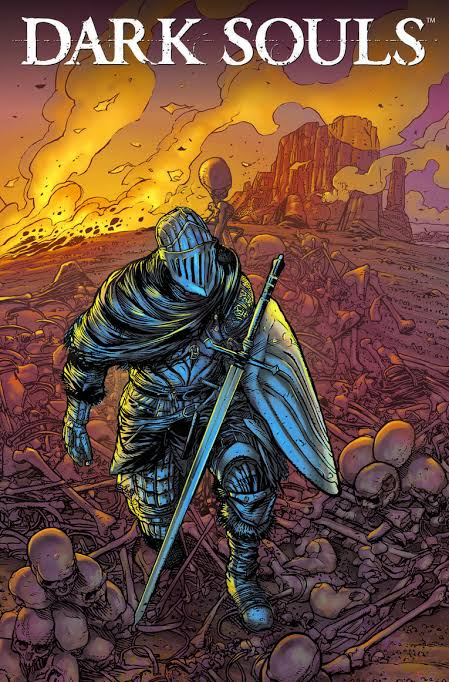
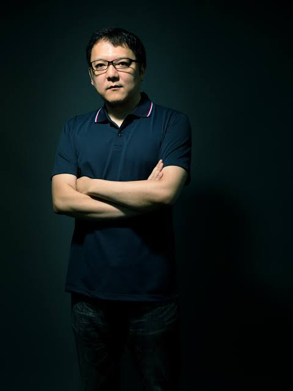
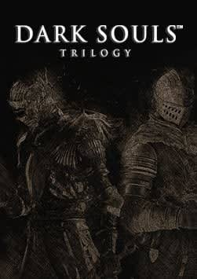

História do jogo

A história do jogo se passa em um mundo onde no começo está sendo dominado por dragões eternos onde o ambiente tem muitas arvóres grandes, e na escuridão desse mundo surgiu uma chama e 4 almas onde 4 seres pegaram elas, e ganharam poder e foram enfretar os dragões eternos, e foi uma batalha que acabou com a vitória desses seres que depois foram chamados de deuses, eles formaram reinos e uma época dos deuses, com o passar do tempo a chama desse mundo ficou fraca e trouxe a esse mundo uma maldição, e para tentar fazer com que essa chama fique forte o deus mais forte se sacríficou para manter a chama acessa, mas que depois de um tempo a chama ficou fraca de novo e trouxe a maldição novamente.
origem

Hidetaka Miyazaki mudou de carreira aos 29 anos, inspirado por jogos como ICO, e entrou na FromSoftware. Ele assumiu Demon’s Souls, um projeto quase cancelado, que acabou conquistando um público fiel. Com seu sucesso, Miyazaki criou Dark Souls (2011), um universo de fantasia sombria em parceria com a Bandai Namco. O jogo se destacou pelo mundo interligado de Lordran, com atalhos e áreas conectadas de forma inteligente. Sua dificuldade foi criada para incentivar aprendizado, superação e uma verdadeira sensação de conquista.
triologia

Após o sucesso do primeiro jogo, a série continuou com Dark Souls II, expandindo o universo com novos personagens, regiões e desafios. Em seguida, Dark Souls III encerrou a trilogia, trazendo de volta elementos marcantes dos jogos anteriores e aprofundando a história. Os três jogos se destacam pela dificuldade, exploração e combates estratégicos. Cada mundo apresenta áreas perigosas, inimigos desafiadores e segredos para serem descobertos. A história é contada principalmente por meio de cenários, diálogos e descrições de itens, fazendo o jogador montar sua própria interpretação. Assim, a trilogia Dark Souls se tornou uma das séries mais marcantes e influentes dos videogames.